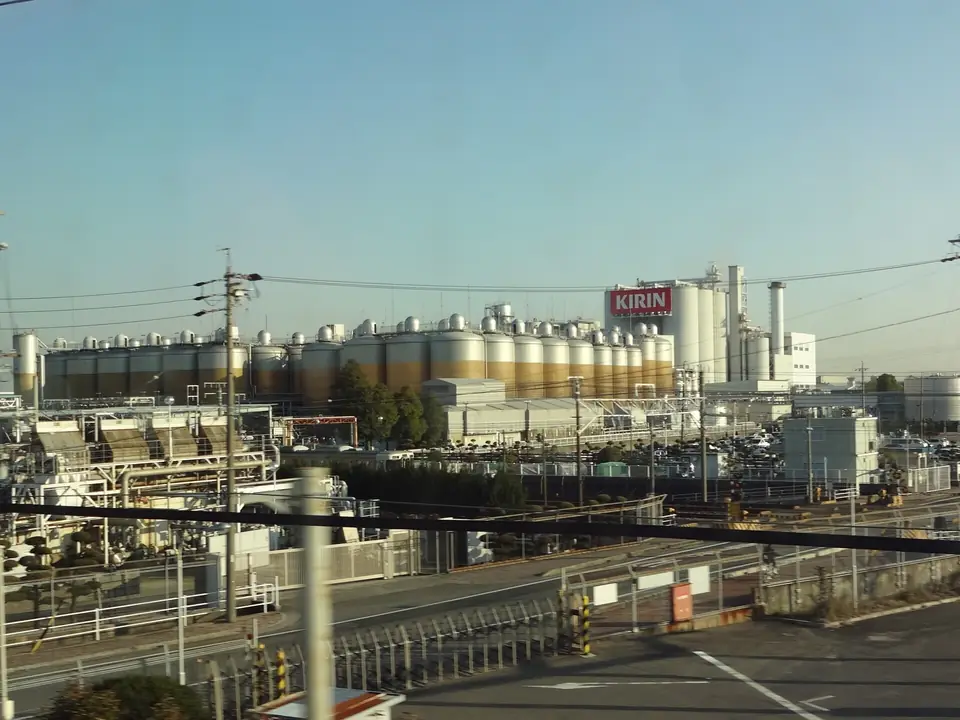
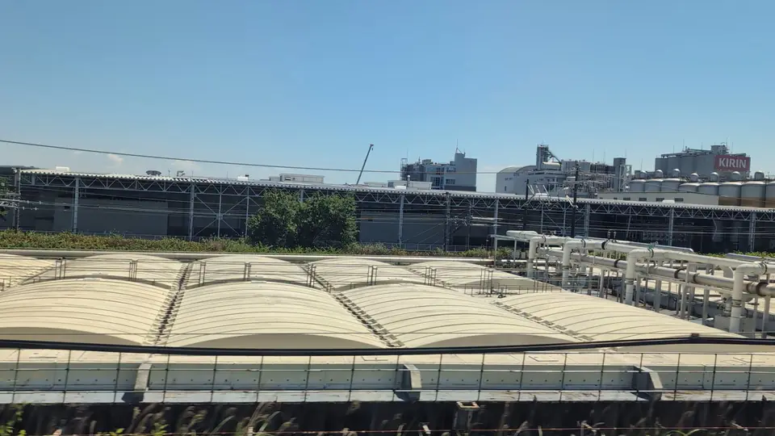

TOKAIDO SHINKANSEN WINDOW VIEW
When can you see Kirin Beer Factory from the Shinkansen?
Rows of giant beers.

- Section
- Nagoya → Gifu-Hashima
- Seat side
- Seat E · mountain side
- Timing
- About 98 minutes after leaving Tokyo on a Nozomi train
- Photos
- 3 photos
How to find Kirin Beer Factory
After leaving Nagoya, crossing the Shonai River and passing Biwajima, the Kirin Beer Nagoya Factory appears on the Seat E side. Its storage tanks look like rows of giant draft beers from the train window: an industrial scene that somehow turns into a playful discovery.
More: @letus10: Kirin Beer Factory window article (Japanese only)
If you are traveling from Tokyo toward Shin-Osaka, start watching the Seat E · mountain side window as you approach Nagoya → Gifu-Hashima. If you are traveling toward Tokyo, the order is reversed.
Location at a glance
Open mapSwitch between the spot and the Shinkansen viewpoint.
How to catch Kirin Beer Factory
1. Choose the window first
As you approach Nagoya → Gifu-Hashima, start watching from Seat E · mountain side. Use Live Guide while riding, or the map on this page before you board.
The clearest view lasts only a few seconds. Decide the seat side and window direction before it arrives rather than reaching for your camera late.
2. Highlights
Factories and signs are a different kind of Tokaido landmark: not classic sightseeing, but very much part of the view from the line.
Kirin Beer Factory in photos


 Related
Kiyosu Castle
Related
Kiyosu Castle
 Related
Nagoya Station Skyline
Related
Nagoya Station Skyline
 Related
Solar Ark
Related
Solar Ark